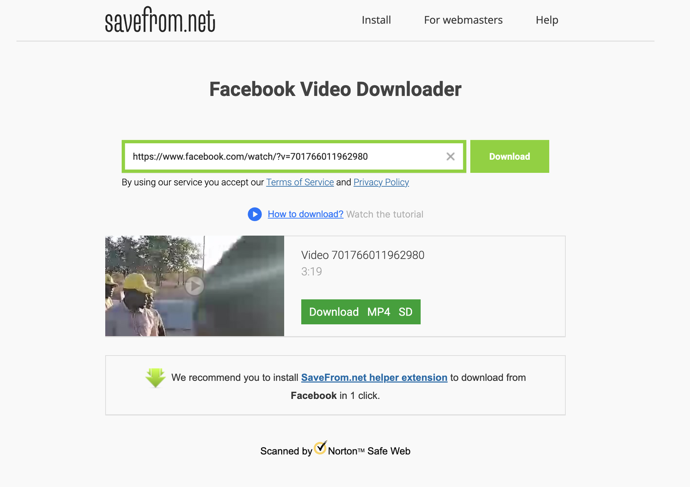
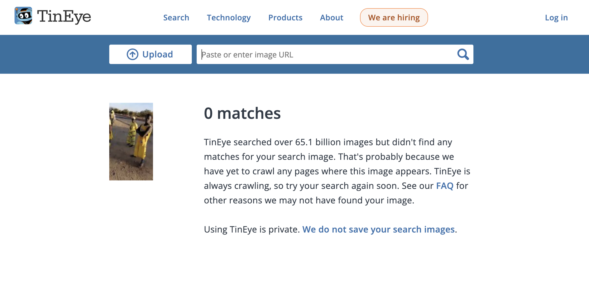
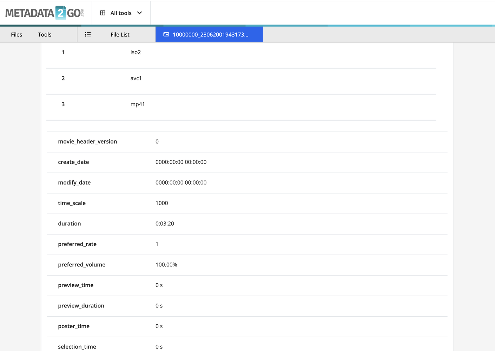
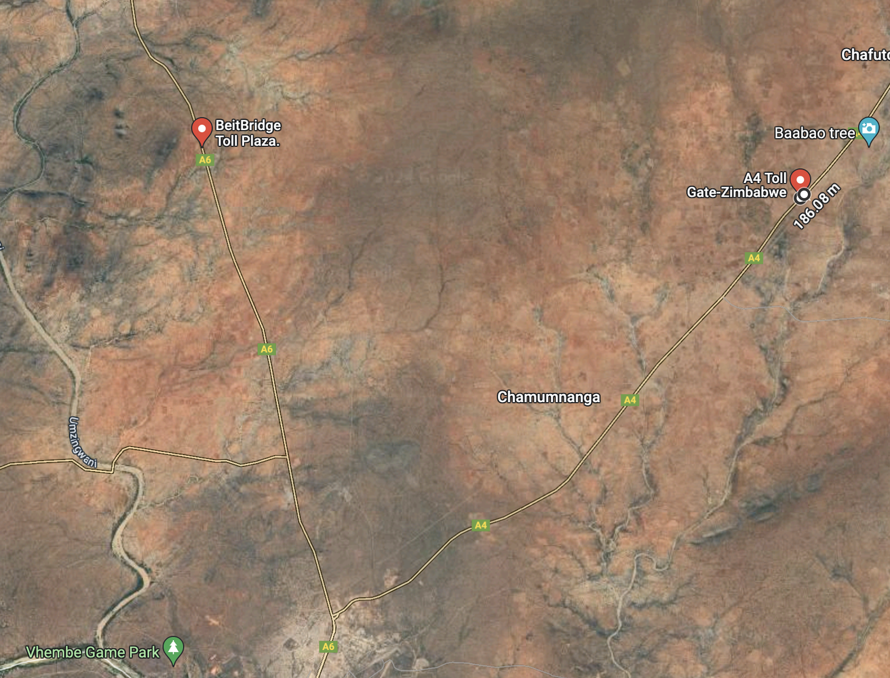
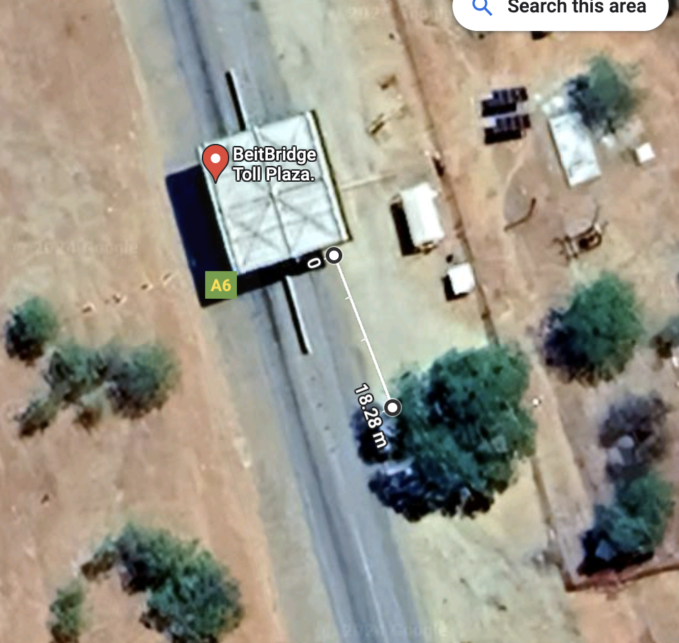
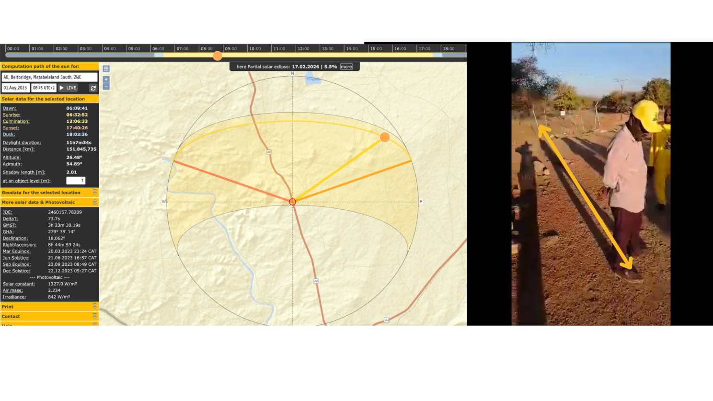

Lessons from the 2023 Elections: Seeing Through the Noise - A Framework for Verifying Social Media Content During Elections
The 2023 Elections marked a significant turning point, being the first to occur amidst the rise of Artificial Intelligence generative misinformation and widespread internet penetration. While the election witnessed minimal use of manipulated imagery, original videos with false narratives proliferated. In such a highly emotional and charged environment, the imperative for rapid fact-checking became paramount.
During my tenure as a Social Media Monitor with the EU mission in Zimbabwe, I developed a framework tailored to address this challenge. Designed to be adaptable and scalable as the volume of media requiring verification surged, this framework streamlined our fact-checking processes.
The framework encompassed the following steps:
Step 1: Downloading the Image/Video
Objective: Forensic evidence gathering focusing on original media.
Step 2: Reverse Image Search
Objective: Verifying the media's prior usage.
Step 3: Metadata Examination
Objective: Confirming the origin of the media.
Step 4: Visual Identification Clues
Objective: Visual detection of inconsistencies.
Step 5: Utilising Digital Forensics Detective Tools
Objective: Confirming observations through digital forensics.
This framework served as a structured approach, ensuring thorough verification amidst the rapid dissemination of misinformation. In this article, I will walk you through an example illustrating how this framework operated in practice.
Key Takeaways
- Enhanced Accuracy: The framework facilitated the precise identification and verification of media content, ensuring a heightened level of accuracy in discerning misinformation.
- Increased Efficiency: By streamlining the fact-checking process, the framework enabled swift verification of media content, enabling prompt responses to emerging misinformation.
- Detection of Trends: Analysis of verified media content unveiled patterns and trends in misinformation dissemination, offering valuable insights into the strategies employed by nefarious actors to manipulate public opinion.
- Validation of Original Sources: Verifying the authenticity of video sources was paramount in ensuring the integrity of the information examined.
- Identification of Manipulation Techniques: Documenting systematic manipulation techniques was a primary mission objective, with each media investigation shedding light on prevalent manipulation trends.
- Collaborative Approach: Collaboration among team members was key, as fact-checking served as the foundational step complemented by legal and historical political context, providing a comprehensive understanding of the electoral landscape.
An illustrative example of the framework in action
A video circulated, claiming that the local police were removing campaign posters of opposition parties. This article details the incident https://zimfact.org/factsheet-the-law-and-defacing-of-political-campaign-posters/
Let's dissect the verification process:
Step 1: Download the Image/Video
Step 2: Reverse Image Search
Utilize the tool TinEye to check if the image or a screenshot of the video has been used as a video cover.
Results: Negative
Conclusion: No results - the image does not appear to have been used before
Step 3: Check for Metadata
Objective: Confirm the province of the media.
Use Metadata2Go to examine the metadata.
Results: No time or date reflected.
Inconclusive information about the date and time of the video. Note that some social media services may strip this data from uploaded media.
Step 4: Visual Identification Clues
Objective: Visual detection.
What can we see?
- A group of CCC supporters.
- Regalia resembling recent styles.
- Presence of a baobab tree.
- A straight-tared road.
- Toll gate infrastructure.
- The video title suggests Beitbridge.
- Individuals casting long shadows.
Step 5: Digital Forensics Tools
Objective: Verify location and time using Google Maps and SunCalc.
Tools:
Google Maps: Beitbridge has two toll gates entering the town, East side on the A6 from Bulawayo and west on the A4 coming from Harare.
The Eastside closely matches video parameters.
SunCalc: Confirm date and time by analysing shadows.
Results: The video is likely genuine, occurring at the stated place and time.
Conclusion: Noteworthy is that the posters were within 100 meters of a public/government facility ie the Tollgate infrastructure. Land ownership and legality of placing posters there extend beyond my expertise.